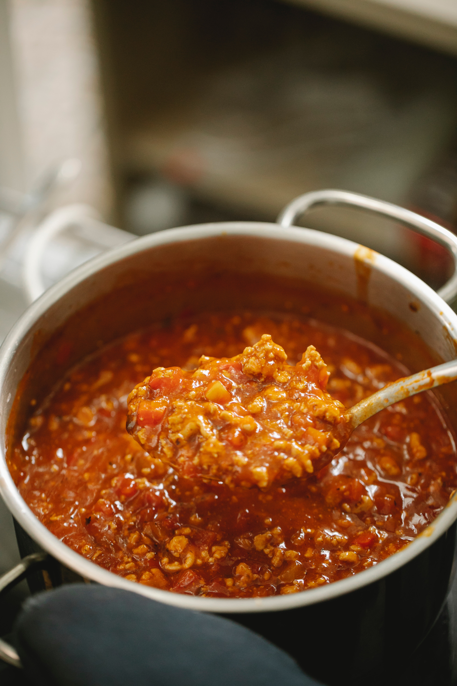

A Delicious Bolognese Sauce

Description
This classic Italian sauce simmers for hours to develop maximum flavor. Made with a blend of ground beef, pork, and Italian sausage, it's great with fresh pasta.
Slow cooked for at least a couple of hours, the sauce is deep, rich, flavorful, and worth the extra effort!
Ingredients
- 2 ounces pancetta, finely chopped
- 1 medium Spanish onion or yellow onion, finely chopped
- 1 celery rib, finely chopped
- 1 carrot, finely chopped
- 3 tablespoons unsalted butter
- 12 ounces ground beef
- 4 ounces ground pork
- 4 ounces Italian sausage, casings removed, if needed
- Dash ground cloves
- Dash ground cinnamon
- 1 teaspoon freshly ground black pepper
- 2 pounds peeled and chopped tomatoes (or one 28-ounce can whole peeled tomatoes, packed in water)
- 1 cup whole milk
- 1/2 teaspoon sea salt
Steps
-
Make the soffritto
Combine pancetta, onion, celery, and carrot in sauté pan with butter and cook over medium heat until onion turns pale gold, about 10 minutes.
-
Add the meats
Add the beef, pork, and sausage to the soffritto, and cook until browned, about 5 minutes.
-
Add the meats
Sprinkle with the clove, cinnamon, and pepper.
-
Add the tomatoes and simmer
Stir in tomatoes, increase the heat to bring to a simmer and then reduce the heat back to medium. Cook over medium heat for 15 minutes. If you are using whole canned tomatoes, break them up as you add them to the sauce.
-
Simmer for 2 1/2 hours
Add milk and season with sea salt. Then turn down the heat to low, partially cover, and simmer for 2 1/2 hours. Stir at least every 20 minutes.
Whenever the sauce gets too dry and starts sticking to the pan, just add 1/4 cup of water and scrape up any browned bits from the bottom of the pan.
-
Simmer for 2 1/2 hours
Taste the sauce and adjust the seasoning as necessary.
Bolognese is traditionally served with fresh tagliatelle pasta, but you can also serve it with fettuccine, pappardelle, penne, or other pasta. Sauce freezes well for future use.
Go back
For the full article, visit This link.